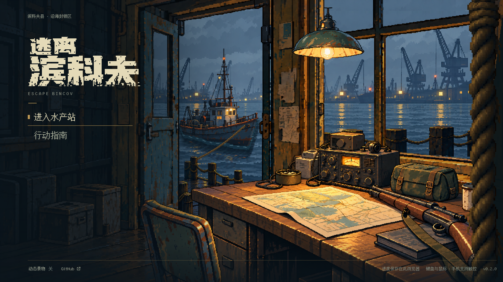

<!doctype html>
<html lang="zh-CN"><meta charset="utf-8"><meta name="viewport" content="width=device-width,initial-scale=1"><title>主界面空间与光照对照</title>
<style>
:root{color-scheme:dark;font:16px/1.6 system-ui,sans-serif;background:#10191e;color:#dedbca}body{margin:0;padding:24px}main{max-width:1500px;margin:auto}h1{font-size:24px;margin:0 0 6px}p{color:#afb7b7;margin:0 0 16px}nav{display:flex;gap:10px;flex-wrap:wrap;margin-bottom:12px}button{font:inherit;color:inherit;border:1px solid #495556;background:#1b292e;padding:9px 16px;cursor:pointer}button[aria-pressed=true]{background:#b99d65;color:#10191e;border-color:#d6c294}button:focus-visible{outline:3px solid #f1cc72;outline-offset:3px}.stage{aspect-ratio:16/9;background:#081014;position:relative;overflow:hidden}.stage img{position:absolute;inset:0;width:100%;height:100%;object-fit:contain;image-rendering:pixelated}figcaption{padding:10px 0;color:#b6c1c0}.notes{display:grid;grid-template-columns:repeat(3,1fr);gap:16px;margin-top:12px}.notes div{border-top:1px solid #425055;padding-top:12px}strong{color:#dfc58e}a{color:#dfc58e}@media(max-width:700px){body{padding:12px}.notes{grid-template-columns:1fr}h1{font-size:20px}}
</style>
<main><h1>空间与光照：概念、上一版、修订稿</h1><p>同一画幅切换查看。后两张是实际游戏截图；本轮仍未完成美术验收。键盘 1 / 2 / 3 可切换。</p>
<nav aria-label="对照画面"><button data-n="0" aria-pressed="false">1 · 原概念图</button><button data-n="1" aria-pressed="false">2 · 上一版实装</button><button data-n="2" aria-pressed="true">3 · 本轮修订稿</button></nav>
<div class="stage"></div><figcaption id="caption" aria-live="polite">本轮修订稿 · 离线单文件 · 1920×1080 · 固定初始姿态</figcaption>
<div class="notes"><div><strong>前景</strong><br>比较右侧粗绳、近门柱和椅背的大小、出画与遮挡。</div><div><strong>中景</strong><br>比较桌沿的方向、电台与包的比例、地图光池和柜体阴影。</div><div><strong>后景</strong><br>比较船舱与桅杆、船水接触、雾中岸线和反光强度。</div></div><p style="margin-top:20px"><a href="water-and-parallax.webm">播放本轮真实动态录屏</a> · <a href="README.md">修订记录与未验收项</a></p>
</main><script>
const views=[['concept-approved.png','原概念图 · 用户认可的空间、透视与画风参考'],['../refinement/static-1920x1080.png','上一版实装 · 735cbfa · 用户指出空间与光照未达标'],['static-1920x1080.png','本轮修订稿 · 离线单文件 · 1920×1080 · 固定初始姿态']];
function select(n){const [src,label]=views[n];document.querySelector('#preview').src=src;document.querySelector('#preview').alt=label;document.querySelector('#caption').textContent=label;document.querySelectorAll('button').forEach((b,i)=>b.setAttribute('aria-pressed',String(i===n)))}
document.querySelectorAll('button').forEach(b=>b.addEventListener('click',()=>select(Number(b.dataset.n))));addEventListener('keydown',e=>{if(['1','2','3'].includes(e.key))select(Number(e.key)-1)});
</script></html>
